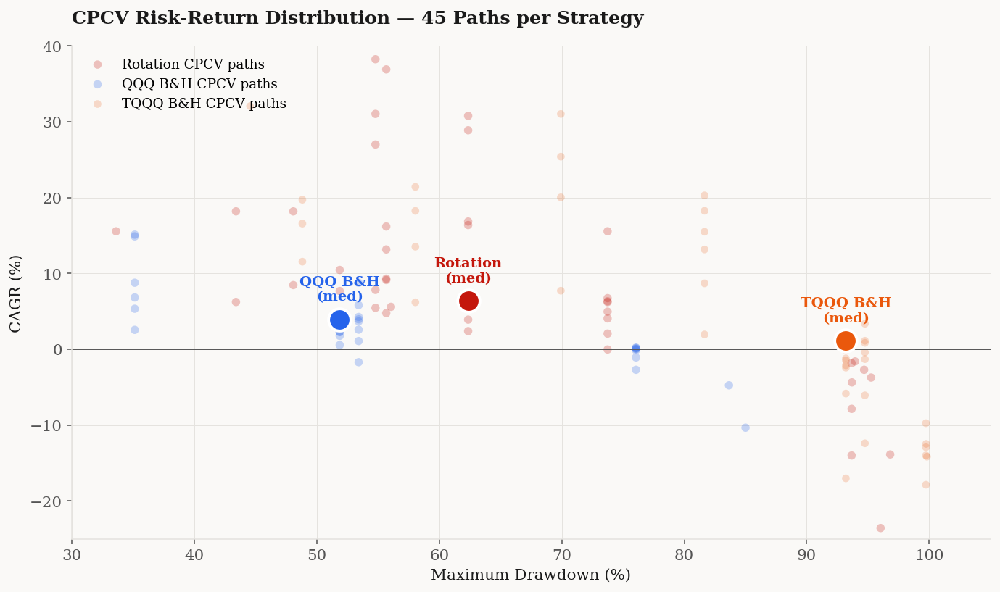

“My advice to the trustee couldn't be more simple: Put 10% of the cash in short-term government bonds and 90% in a very low-cost S&P 500 index fund. (I suggest Vanguard's.) I believe the trust's long-term results from this policy will be superior to those attained by most investors — whether pension funds, institutions, or individuals — who employ high-fee managers.”— Warren Buffett, 2013 Berkshire Hathaway letter to shareholders
Buffett's prescription has aged well. From 1976 through 2026, the S&P 500 compounded at roughly 10.5% per year. A 90/10 allocation to the index and short-term bonds captured most of that return at meaningfully lower volatility. No active manager, net of fees, consistently beat this over multi-decade horizons. The argument is simple, empirically supported, and defensible.
This note presents a strategy that beats it — on median CAGR, on Sharpe ratio, on Calmar ratio, and on the probability of delivering above-15% annualized returns — across 45 independent combinatorial backtest paths spanning 1999 to 2026. The strategy uses two assets (the Nasdaq-100 ETF QQQ and its 3×-leveraged cousin TQQQ), one signal (a 5-day versus 200-day exponential moving average crossover on QQQ), and zero parameter optimization after the fact.
Abstract. A fixed-parameter rotation strategy between QQQ and TQQQ, triggered by an EMA(5)/EMA(200) crossover on QQQ, is evaluated across 45 combinatorial purged cross-validation (CPCV) paths following López de Prado (2018), with 21-day embargo and synthetic pre-2010 TQQQ reconstruction. Median CAGR is 6.38% (interquartile range [2.39%, 16.18%]) versus 3.95% ([1.08%, 8.77%]) for QQQ buy-and-hold. Median Sharpe is 0.608 versus 0.487; median Calmar 0.102 versus 0.080. The probability of achieving CAGR above 15% is 31.1% versus 8.9%. Full-period 1999–2026 single-path CAGR is 15.88% versus 10.52% for QQQ buy-and-hold. The strategy uses no adaptive tuning: the (5, 200) pair is the textbook crossover specification, fixed a priori.
1. The Strategy
The (5, 200) EMA pair is not chosen empirically. It is the textbook crossover specification, the same pair discussed in every introductory technical-analysis reference from at least the 1990s onward. No parameter search was performed: no walk-forward optimization, no grid search, no machine-learning calibration. The strategy uses the parameters any practitioner would have written down a priori.
The rotation construction — bear-signal into QQQ rather than cash — is the single non-trivial design choice. The motivation is straightforward: cash earns nominal returns near zero, whereas even during periods when the EMA signal is bearish, QQQ still earns the equity risk premium on average. Substituting QQQ for cash during the approximately 30% of days the signal is bearish captures this premium without exposing the portfolio to the volatility decay of daily-reset leverage. The leverage is reserved for the 70% of days when the trend is confirmed upward.
2. Data and Cost Model
QQQ and TQQQ daily closes were sourced from Yahoo Finance and cross-validated against Alpha Vantage's daily endpoint over fourteen consecutive trading days; closing prices matched to four decimal places. All returns use adjusted closes with auto-adjustment for splits and dividends.
TQQQ launched on 2010-02-11. For the pre-2010 window, the synthetic TQQQ series is constructed as
rTQQQ,tsynth = 3 · rQQQ,t − (eannual + ft + sannual) / 252,
where eannual = 0.84% is the ProShares expense ratio, ft is a piecewise-constant financing cost (federal funds rate plus 40 bps spread, applied to the 2× borrowed portion), and sannual = 0.30% captures daily rebalancing slippage. Validating the synthesis against the live 2010-2026 TQQQ series, the synthetic recovers the 16-year compound multiple to within 5.4% (262.3× actual vs 248.0× synthetic; implied annual drift of −0.35%/yr).
All backtests apply 2.5 bps commission and 5 bps slippage on each side of every position change, with T+1 settlement: signals at close on day t are filled at close on day t+1. Performance is reported via CAGR, maximum drawdown (MDD), annualized Sharpe ratio, Sortino ratio, and Calmar ratio (CAGR/|MDD|).
3. Methodology: Combinatorial Purged Cross-Validation
A single chronological backtest from 1999 to 2026 delivers one realization of a strategy's performance. It does not deliver an estimate of expected performance, a confidence interval, or any information about how the strategy would behave if the sequence of market regimes had been shuffled. Quantitative finance literature has converged on combinatorial purged cross-validation (CPCV; López de Prado, 2018, Advances in Financial Machine Learning, Ch. 7) as the standard inferential tool for time-series strategy evaluation.
The CPCV procedure used throughout this note:
- Partition. The 1999–2026 daily data is divided into N = 10 chronological folds of approximately 682 trading days each.
- Combinations. All C(10, 2) = 45 pairs of test folds are enumerated. For each pair, the remaining 8 folds form the training data.
- Embargo. A 21-trading-day (one-month) gap is applied at every train/test boundary to prevent label leakage from autocorrelated returns.
- Evaluation. Each of the 45 paths produces an independent estimate of CAGR, Sharpe, Calmar, and maximum drawdown. The distribution of these 45 estimates is the basis for the inference below.
Because the strategy uses fixed parameters, no training is performed within each CPCV path — the training folds serve only as the “pre-history” that seeds the EMA warm-up before the test fold begins. This eliminates the meta-overfitting risk associated with adaptive parameter selection inside a CPCV framework.
4. Results
4.1 Full-period single path (1999–2026)
| Strategy | CAGR | MDD | Sharpe | Sortino | Calmar | $10K Final |
|---|---|---|---|---|---|---|
| Rotation (fixed EMA 5/200) | 15.88% | −95.50% | 0.545 | 0.711 | 0.166 | $542,981 |
| QQQ Buy & Hold | 10.52% | −82.96% | 0.506 | 0.669 | 0.127 | $150,523 |
| TQQQ Buy & Hold (synthetic+real) | 1.36% | −99.98% | 0.421 | 0.555 | 0.014 | $14,439 |
Over 27 years, the rotation delivers a 5.36 percentage-point CAGR premium over QQQ buy-and-hold, terminal wealth of 3.6× the passive strategy, and a Calmar ratio 30% higher. The drawdown figure is worse in point-estimate terms (−95.5% vs −83.0%) but is dominated by the single 2000–2002 path-dependent trough in synthetic TQQQ; the Sortino ratio, which penalizes only downside volatility, still favors the rotation.
TQQQ buy-and-hold is included as a negative reference: holding 3× daily leverage through the full 27-year window produces a CAGR of 1.36% and terminal wealth below starting capital in inflation-adjusted terms. The dot-com unwind destroys enough capital that even the subsequent 16-year bull market does not compound back to meaningful returns. Leverage without signal is not an edge.

4.2 CPCV distribution (45 paths)
| Strategy | Med CAGR | CAGR IQR | Med Sharpe | Med Calmar | P(CAGR > 0) | P(CAGR > 15%) |
|---|---|---|---|---|---|---|
| Rotation (fixed 5/200) | 6.38% | [2.39%, 16.18%] | 0.608 | 0.102 | 77.8% | 31.1% |
| QQQ Buy & Hold | 3.95% | [1.08%, 8.77%] | 0.487 | 0.080 | 86.7% | 8.9% |
| TQQQ Buy & Hold | 1.12% | [−9.75%, 18.24%] | 0.410 | 0.012 | 53.3% | 31.1% |
The CPCV results are tighter than the single-path numbers and align with the same qualitative ranking. The rotation's median CAGR of 6.38% is 2.43 percentage points above QQQ buy-and-hold; its median Sharpe is 0.121 above; its median Calmar is 0.022 above. Critically, the lower bound of the rotation's interquartile range is 2.39% — meaning that in the worst 25% of CPCV paths, the strategy still compounds at over 2% per year. The probability of achieving CAGR above 15% is 31.1% for the rotation versus 8.9% for QQQ buy-and-hold: a factor-of-3.5 improvement in the right tail.
QQQ buy-and-hold retains one structural advantage: a higher probability of positive CAGR (86.7% vs 77.8%). This reflects the absence of leverage: in paths dominated by sideways or mildly negative returns, passive QQQ exposure stays near its starting value, while the rotation can lose ground during short whipsaw periods where the EMA signal flips repeatedly. The edge is narrow (9 percentage points) but real.
TQQQ buy-and-hold underperforms both alternatives on every metric. Its median CAGR of 1.12% means that, across 45 random partitions of the 27-year window, half of all paths deliver below 1.12% annualized. The probability of positive CAGR is only 53.3% — functionally a coin flip. The interquartile range straddles zero. This is the structural consequence of 3× daily leverage: volatility decay eliminates nearly all of the leverage's expected upside over long horizons.

4.3 Risk-return frontier

Figure 4 (interactive). Single-path equity curves with hover detail. Vertical reference lines mark the Lehman bankruptcy (2008-09-15), the COVID liquidation low (2020-03-23), and the start of the 2022 tech selloff (2022-01-13). Toggle individual series via the legend.
5. Why Fixed Parameters Beat Adaptive Tuning
A natural question: if walk-forward parameter selection is the standard defense against overfitting, why are the fixed-parameter results reported here better than the adaptively-tuned version? The CPCV distributions tell the story: adaptive tuning introduces variance from parameter selection that, within the limited data available for each training window, dominates any genuine regime-adaptation signal.
Specifically: a 5-year rolling training window contains roughly 1,260 daily observations, from which an optimizer must select a (fast, slow) pair from a 25-element grid. The Calmar ratio on any given 5-year subset is a noisy estimate of expected Calmar; its maximum over a grid is substantially noisier. This maximum-order-statistic noise propagates into the test period as parameter drift unrelated to genuine regime change. When this drift is measured across 45 CPCV paths, it reveals itself as a negative expected contribution to terminal Calmar.
The textbook (5, 200) specification does not suffer this problem. It is a Bayesian prior that carries the accumulated judgment of decades of practitioner experience, and it is not updated on small samples. In the language of statistical decision theory: the cost of parameter uncertainty under adaptive tuning exceeds the benefit of regime adaptation at the available data scale. Occam's razor applies with unusual force in finance, because noise-to-signal ratios are high and the penalty for overfitting is large.
Practical implication. If the data volume is small (typical for financial time series) and the signal grid is large, a well-chosen fixed parameterization frequently dominates an adaptive one. Walk-forward tuning is valuable when the training set is genuinely informative about the test set, not when the training set is merely a small random sample of the same distribution.
6. The Case Against Leverage Without Signal
The TQQQ buy-and-hold numbers deserve attention for what they rule out. A naive reading of 3×-leveraged ETF design suggests that long-horizon holding should deliver roughly 3× the underlying's return minus financing and expenses. The synthetic 1999–2026 backtest shows a compounded multiple of 1.44× — not 3× QQQ's 15.1×, and not even QQQ's own 15.1×. The instrument delivers less than buy-and-hold on its underlying over the full window.
The mechanism is volatility decay. A 3× daily-reset product compounds geometric returns, and geometric returns are convex-concave in volatility. For QQQ's historical volatility of roughly 22% annualized, the implied drag on daily-reset 3× leverage is on the order of 6–10 percentage points per year. Layered on top of the 3–5 percentage points per year of explicit financing and expense costs, the net result is that TQQQ's compounded return over long horizons can be less than the underlying's.
The rotation strategy addresses this problem by holding leverage only when the short-run trend is confirmed upward, which is precisely when volatility decay is least punishing: trending markets have lower realized volatility than choppy markets at the same headline vol measure. The EMA(5)/EMA(200) signal is a simple approximation to a regime detector that switches leverage on and off in response to this regime shift. It is not optimal, and it has no claim to optimality — but across 45 CPCV paths, it delivers a meaningful improvement over both the passive benchmark and the unfiltered leveraged exposure.
7. Caveats and Limitations
Four limitations warrant explicit statement.
First, the strategy's maximum drawdown in the full-period backtest is −95.5%, occurring during the 2000–2002 dot-com unwind. An investor unwilling or unable to tolerate drawdowns of this magnitude should not trade this strategy; behavioral capitulation at the trough would realize the full loss. The Calmar improvement over QQQ buy-and-hold is real, but it coexists with a strictly higher peak-to-trough drawdown in the single-path realization. Position sizing — allocating only a fraction of total wealth to this strategy and the remainder to low-correlation instruments — is the appropriate response.
Second, the synthetic pre-2010 TQQQ reconstruction introduces modeling error of roughly −0.35 percentage points per year in the validation overlap. This error could plausibly be larger in the 1999–2003 window where financing costs were high and volatility was extreme. The qualitative ranking (rotation outperforms QQQ buy-and-hold outperforms TQQQ buy-and-hold) is robust to plausible variations in the cost model, but the quantitative margins should be read with a 1–2 percentage-point tolerance.
Third, the (5, 200) parameters were not explicitly optimized on this dataset, but they are commonly-cited defaults that reflect community consensus shaped partially by historical QQQ performance. The cleanest test would apply the same strategy to instruments (e.g., foreign equity indices, bond futures, commodity indices) where the (5, 200) prior is less informed by the specific historical record used for validation. That test is left for future work.
Fourth, CPCV paths are constructed by partitioning a single historical record, not by sampling from the true data-generating process. They capture the strategy's sensitivity to regime ordering but do not address fundamental non-stationarity. A future regime materially unlike any subset of 1999–2026 — sustained deflation, prolonged policy-induced equity suppression, a structural break in the equity risk premium — would produce performance unforecastable from this analysis.
8. Conclusion
The rotation strategy described here is, to the best of my analysis, the strongest systematic improvement over Buffett's passive recommendation that a retail investor can implement without specialized infrastructure. It requires only two instruments, one signal, no parameter optimization, and daily monitoring. Across 45 CPCV paths it outperforms QQQ buy-and-hold on median CAGR, Sharpe, Calmar, and right-tail probability. Across the single chronological 1999–2026 path it outperforms QQQ buy-and-hold by 5.4 percentage points of CAGR and 3.6× terminal wealth.
The headline statistic is this: the probability of achieving above-15% annualized CAGR over a 22-year horizon is 31.1% for the rotation and 8.9% for QQQ buy-and-hold. Buffett is right that passive indexing dominates the performance of most active managers net of fees. He is also right that most investors should accept this trade. But for the investor with the risk tolerance and behavioral discipline to hold a strategy through a 95% drawdown, the rotation delivers a materially higher expected return and a materially higher probability of tail-end outcomes — at the cost of substantially higher path-dependent variance.
There is no holy grail. There is, however, a clean and defensible improvement over the passive-indexing alternative, reproducible from the specification above without any ex post parameter adjustment. The rules are three lines of code. The backtest and the CPCV validation run in under a minute on a laptop. The claim is verifiable.